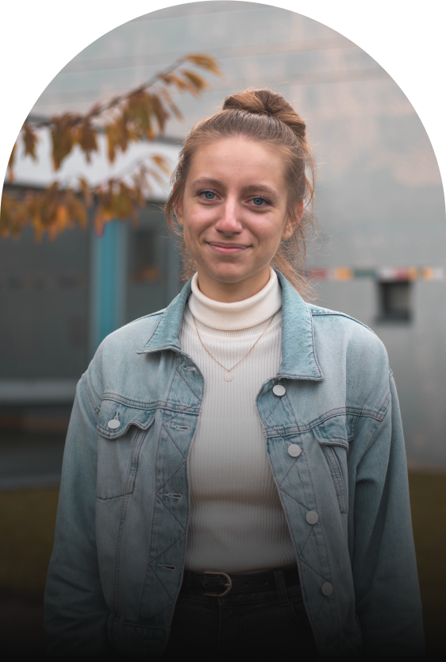

À propos
Je suis Zoé Louyot, une étudiante en webdedsign et en communication. Je réalise des designs pour des projets de différentes natures : sites internet, marques, entreprises ou événements.
Mon parcours
Après avoir obtenu mon bac scientifique en 2020, je me suis orientée en DUT Métiers du Multimédia et de l'Internet (MMI).
Cette formation m'a permis de découvrir les métiers du web, et j'ai pu mettre en application les connaissances apprises lors de projets, la plupart contenant la conception graphique de sites internet et d'une identité visuelle.
Ces différents projets m’ont apporté des expériences de travail en groupe, mais aussi en autonomie, et je sais gérer les problèmes rencontrés le long de la conception d’un projet.
Mes compétences
Webdesign -
Je crée des maquettes et prototypes de sites Internet et d'applications. Je crée également des chartes graphiques et identités visuelles pour chaque projet, le but étant de donner à un concept une identité qui lui appartient, pour le différencier des autres.
Communication -
Avant de débuter la conception graphique, je réalise des études concurrentielles afin de découvrir le domaine du projet et de trouver des idées pour m'en démarquer. Je fais également des études de cibles, pour déterminer la ou les cibles principales de chaque projet et ainsi créer un design et une ergonomie qui leur conviendra.